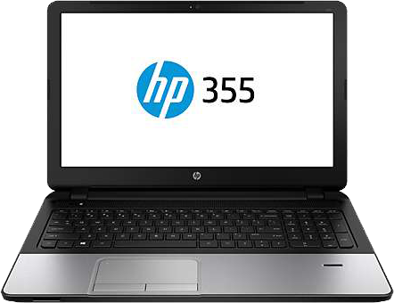
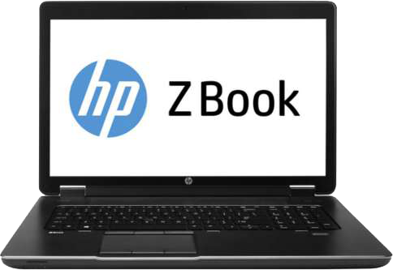
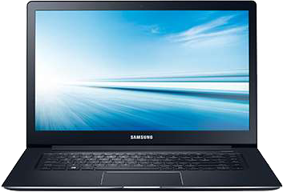
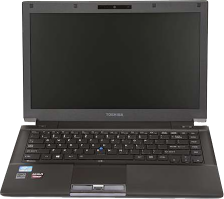

Enhance your gaming with the ASUS ROG G751JT-TH71 Gaming Laptop. This excellent Gaming Laptop is powered by the Intel® Core™ i7-4710HQ 2.5GHz processor and NVIDIA Geforce GTX 970M Graphics to ensure maximum performance. This ASUS notebook has a 1TB HDD to store your games, documents and multimedia files. The 17.3 in. Full HD Display with a screen resolution of 1920 x 1080, perfect for providing high quality visuals and reducing eye strain during those long gaming sessions. It also runs Windows 8.1 64-Bit, Microsoft’s most advanced operating system. Take your gaming to the next level with this ASUS ROG G751JT-TH71 Gaming Laptop!

HP 355 G2 AMD A6 Windows 7 Professional/Windows 8 64-bit
Efficient computing can be yours with the HP 355 G2 Notebook PC. It is powered by the AMD A6 6310 1.8GHz Processor for superior performance. The 8GB of DDR3 memory of this Notebook PC ensures seamless handling of multiple applications. The 15.6 in LED-backlit HD anti-glare display with a maximum resolution of 1366 X 768 offers brilliant visuals and allows you to enjoy your movies without causing any strain to your eyes. It runs on the Windows 7 Professional/Windows 8 Pro 64-bit operating systems. The 1TB hard drive provides more than enough space to store your multimedia files, downloads, and other data. Order the HP 355 G2 Notebook PC today!
$599.99

HP ZBook 17 Intel Core i7-4800MQ 2.7 Mobile Workstation Windows 7 Professional/Windows 8 Pro 64-bit
Take your computing experience to the next level with the HP ZBook 17 Mobile Workstation. This laptop computer is equipped with an Intel Core i7 4800MQ 2.7GHz processor that delivers ample power and speed so it can handle all your everyday computing tasks. It has 32GB of DDR3L memory to keep the system fast and responsive, even during intense multitasking sessions. It also includes a 750GB HDD + 512GB SSD for storing your multimedia files, documents, programs, and other digital data. The HP ZBook 17 Mobile Workstation also features a 17.3" LED-backlit HD+ SVA anti-glare Display to provide you with crystal-clear visuals for watching movies or working on high-resolution content. Order the HP ZBook 17 Mobile Workstation now!
$3699.00

SAMSUNG 470R5E/I5-3230M/2.6G/6GB/750GB/15.6/W8
For an incredible computing experience, choose the Samsung Notebook. This notebook is powered by the Intel® Core™ i5-3230M 2.6GHz Processor for highly efficient computing. The 6GB of RAM allows you to carry out multitasking functions smoothly. Its 750GB hard drive which offers you enormous space to store all your documents and multimedia files. It features a 15.6 in. LED HD display which offers stunning visuals with a maximum resolution of 1366 x 768. It comes pre-loaded with the Windows 8 operating system which offers an easy and powerful interface to the user. Order the Samsung Notebook now!
$699.00

Toshiba Portege M780 Notebook PC - Intel Core i5-520 2.40GHz, Windows 7 Professional 64-bit
Carry out more calculations and data processing using the Toshiba Portege M780 Notebook PC. This notebook PC features Intel Core i5-520 2.40GHz processor that offers exceptional processing capacity where you can expect outstanding performance from your applications. It is equipped with 4GB DDR3 memory which enables you to handle daily computing demands with utmost efficiency. You can easily store and retrieve all you files, programs, and other digital data with its 250GB HDD. And with its DVDRW drive, you can quickly play or even burn media contents on DVDs and CDs while you’re on the go. This notebook PC comes with a 12.0" Display which enables you to enjoy viewing contents. The new Windows 7 Professional 64-bit is installed to this PC to provide million more possibilities to your computing. Purchase the Toshiba Portege M780 Notebook PC and start enjoying!